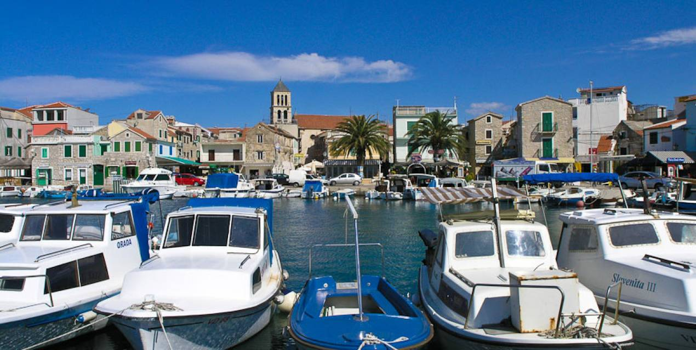

Vodice is one of the subregional centers of Šibenik-Knin County, located 12 km west of Šibenik and in an ideal position in the center of the Adriatic coast. The administrative unit of Vodice includes the coastal settlement of Srima, two island settlements on Prvić - Šepurina and Luka, and places in the interior: Grabovci, Gaćelezi, Čista Velika and Čista Mala. According to the last census, Vodice had 8875 inhabitants, most of whom are directly or indirectly involved in tourism. Tourism, which has a tradition of more than sixty years in Vodice, has developed into a major economic activity and made Vodice a well-known tourist destination characterized by a rich and diverse cultural and entertainment program of Vodice Summer, and for its tourist success and quality offers Vodice awards and recognitions of the profession and guests. The day of the town of Vodice and the parish of Našašća Sveti Križ is celebrated on May 3, the day of the patron saint of the town, St. Jelina. Our Lady of Mount Carmel is especially revered on July 16, whose shrine was erected on the nearby hill of Okit.
Vodice was first mentioned in 1402 although it was founded already in the Roman times as Arausa. Its name derives from the word meaning water sources which supplied the whole area. As part of the Republic of Venice from 1412 to 1797, the defense walls from the times of the Turks with the Coric tower testify the past times. Other similar monuments are St. Cross' church on the former graveyard, built in 1421 and the parish church in the town centre built in 1746. On the nearby hill Okit during the Turkish invasions, refugees founded a settlement and on its top the chapel of Our Lady of Mount Carmel was built in 1660, which was ruined in 1942 by the Italian Navy. The new church, built in 1967, was ruined in 1991, during the Croatian War of Independence, and rebuilt in 1995.